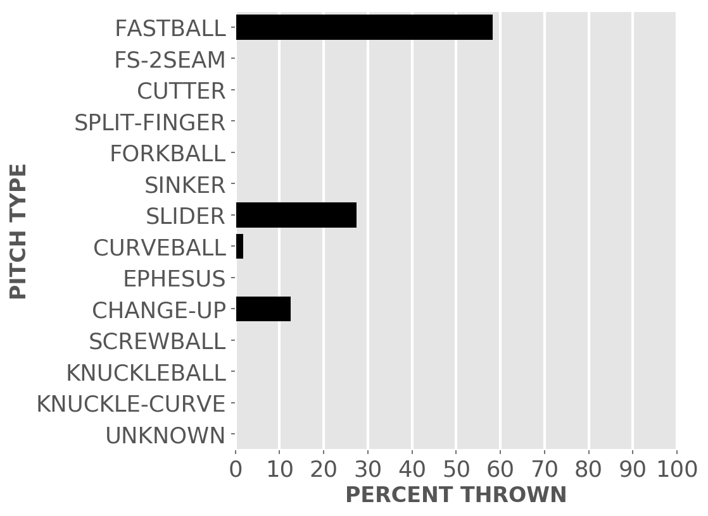

Chicago baseball
White Sox
A little-more-than-casual but not-very-wonky statistical look at the current season
Plenty of seats available to watch the kids learn how to play in the big league.
Updated Monday, May 27, at 12:50 p.m. Pybaseball gathers these from Baseball-reference.com.
Games
JUMP TO TOP | BATTERS | PITCHERS
On Sunday, May 26, the Sox lost a day game at the Twins, 0 to 7, in 9 innings. The winning pitcher was Odorizzi, losing pitcher was Covey. Save: None.
Next scheduled game: Monday, May 27, a game at home with the Royals.
Summary results by team
| Team | Wins | Loses | Avg. Sox runs | Avg. runs against |
|---|---|---|---|---|
| Astros | 2 | 2 | 3.5 | 3.0 |
| Blue Jays | 4 | 3 | 3.86 | 3.57 |
| Indians | 4 | 4 | 3.75 | 3.75 |
| Mariners | 1 | 2 | 5.67 | 9.67 |
| Orioles | 3 | 3 | 5.33 | 4.83 |
| Rays | 0 | 3 | 2.33 | 8.0 |
| Red Sox | 1 | 3 | 2.75 | 8.5 |
| Royals | 3 | 3 | 4.67 | 4.17 |
| Tigers | 3 | 2 | 6.6 | 5.6 |
| Twins | 0 | 3 | 1.67 | 8.67 |
| Yankees | 2 | 1 | 4.67 | 4.0 |
Batters
JUMP TO TOP | GAMES | PITCHERS
Click the link under a player's name to get up-to-speed on a player at bat.
Jose Abreu #79, 1B
| Status (A = active) | A |
| Bats/Throws | R/R |
| Plate appearances | 223 |
| At bats | 205 |
| Hits | 54 |
| Home runs | 13 |
| Batting Avg. | 0.263 |

| Runs | 25 |
| RBI | 42 |
| On-base percent | 0.318 |
| Weighted OBP | 0.348 |
| Slugging % | 0.522 |
| Stolen bases | 2 |
| Caught stealing | 2 |
Other measures
| Weighted runs above avg. (wRAA) | 5.7 |
| Runs Above Replacement (RAR) | 5.2 |
| Fielding RAR | -1.3 |
| Wins above replacement (WAR) | 0.5 |
Yonder Alonso #17, 1B
| Status (A = active) | A |
| Bats/Throws | L/R |
| Plate appearances | 196 |
| At bats | 170 |
| Hits | 31 |
| Home runs | 6 |
| Batting Avg. | 0.182 |

| Runs | 19 |
| RBI | 22 |
| On-base percent | 0.291 |
| Weighted OBP | 0.268 |
| Slugging % | 0.318 |
| Stolen bases | 0 |
| Caught stealing | 0 |
Other measures
| Weighted runs above avg. (wRAA) | -8.1 |
| Runs Above Replacement (RAR) | -5.2 |
| Fielding RAR | 0.6 |
| Wins above replacement (WAR) | -0.5 |
Tim Anderson #7, SS
| Status (A = active) | A |
| Bats/Throws | R/R |
| Plate appearances | 187 |
| At bats | 178 |
| Hits | 60 |
| Home runs | 8 |
| Batting Avg. | 0.337 |

| Runs | 28 |
| RBI | 25 |
| On-base percent | 0.369 |
| Weighted OBP | 0.373 |
| Slugging % | 0.506 |
| Stolen bases | 13 |
| Caught stealing | 2 |
Other measures
| Weighted runs above avg. (wRAA) | 8.7 |
| Runs Above Replacement (RAR) | 15.0 |
| Fielding RAR | -4.2 |
| Wins above replacement (WAR) | 1.5 |
Welington Castillo #21, C
| Status (A = active) | D7 |
| Bats/Throws | R/R |
| Plate appearances | 98 |
| At bats | 85 |
| Hits | 15 |
| Home runs | 3 |
| Batting Avg. | 0.176 |

| Runs | 4 |
| RBI | 10 |
| On-base percent | 0.286 |
| Weighted OBP | 0.271 |
| Slugging % | 0.318 |
| Stolen bases | 0 |
| Caught stealing | 0 |
Other measures
| Weighted runs above avg. (wRAA) | -3.9 |
| Runs Above Replacement (RAR) | -3.7 |
| Fielding RAR | -3.7 |
| Wins above replacement (WAR) | -0.4 |
Ryan Cordell #49, CF
| Status (A = active) | A |
| Bats/Throws | R/R |
| Plate appearances | 97 |
| At bats | 84 |
| Hits | 19 |
| Home runs | 3 |
| Batting Avg. | 0.226 |

| Runs | 7 |
| RBI | 11 |
| On-base percent | 0.309 |
| Weighted OBP | 0.297 |
| Slugging % | 0.369 |
| Stolen bases | 2 |
| Caught stealing | 0 |
Other measures
| Weighted runs above avg. (wRAA) | -1.7 |
| Runs Above Replacement (RAR) | -0.7 |
| Fielding RAR | -1.6 |
| Wins above replacement (WAR) | -0.1 |
Leury Garcia #28, LF
| Status (A = active) | A |
| Bats/Throws | S/R |
| Plate appearances | 188 |
| At bats | 176 |
| Hits | 48 |
| Home runs | 2 |
| Batting Avg. | 0.273 |

| Runs | 31 |
| RBI | 15 |
| On-base percent | 0.31 |
| Weighted OBP | 0.289 |
| Slugging % | 0.352 |
| Stolen bases | 7 |
| Caught stealing | 2 |
Other measures
| Weighted runs above avg. (wRAA) | -4.5 |
| Runs Above Replacement (RAR) | 5.1 |
| Fielding RAR | 2.8 |
| Wins above replacement (WAR) | 0.5 |
Eloy Jimenez #74, LF
| Status (A = active) | A |
| Bats/Throws | R/R |
| Plate appearances | 112 |
| At bats | 106 |
| Hits | 23 |
| Home runs | 6 |
| Batting Avg. | 0.217 |

| Runs | 11 |
| RBI | 11 |
| On-base percent | 0.259 |
| Weighted OBP | 0.282 |
| Slugging % | 0.406 |
| Stolen bases | 0 |
| Caught stealing | 0 |
Other measures
| Weighted runs above avg. (wRAA) | -3.3 |
| Runs Above Replacement (RAR) | -5.1 |
| Fielding RAR | -4.0 |
| Wins above replacement (WAR) | -0.5 |
James McCann #33, C
| Status (A = active) | A |
| Bats/Throws | R/R |
| Plate appearances | 122 |
| At bats | 115 |
| Hits | 37 |
| Home runs | 4 |
| Batting Avg. | 0.322 |

| Runs | 17 |
| RBI | 12 |
| On-base percent | 0.361 |
| Weighted OBP | 0.367 |
| Slugging % | 0.504 |
| Stolen bases | 3 |
| Caught stealing | 0 |
Other measures
| Weighted runs above avg. (wRAA) | 5.1 |
| Runs Above Replacement (RAR) | 11.3 |
| Fielding RAR | -0.5 |
| Wins above replacement (WAR) | 1.1 |
Yoan Moncada #10, 3B
| Status (A = active) | A |
| Bats/Throws | S/R |
| Plate appearances | 221 |
| At bats | 202 |
| Hits | 57 |
| Home runs | 9 |
| Batting Avg. | 0.282 |
| Runs | 33 |
| RBI | 32 |
| On-base percent | 0.336 |
| Weighted OBP | 0.349 |
| Slugging % | 0.49 |
| Stolen bases | 5 |
| Caught stealing | 3 |
Other measures
| Weighted runs above avg. (wRAA) | 5.9 |
| Runs Above Replacement (RAR) | 14.4 |
| Fielding RAR | -0.7 |
| Wins above replacement (WAR) | 1.4 |
Jose Rondon #20, 2B
| Status (A = active) | A |
| Bats/Throws | R/R |
| Plate appearances | 76 |
| At bats | 72 |
| Hits | 14 |
| Home runs | 2 |
| Batting Avg. | 0.194 |

| Runs | 6 |
| RBI | 5 |
| On-base percent | 0.237 |
| Weighted OBP | 0.241 |
| Slugging % | 0.319 |
| Stolen bases | 0 |
| Caught stealing | 0 |
Other measures
| Weighted runs above avg. (wRAA) | -4.9 |
| Runs Above Replacement (RAR) | -4.3 |
| Fielding RAR | -2.4 |
| Wins above replacement (WAR) | -0.4 |
Yolmer Sanchez #5, 2B
| Status (A = active) | A |
| Bats/Throws | S/R |
| Plate appearances | 149 |
| At bats | 129 |
| Hits | 29 |
| Home runs | 1 |
| Batting Avg. | 0.225 |

| Runs | 14 |
| RBI | 7 |
| On-base percent | 0.313 |
| Weighted OBP | 0.275 |
| Slugging % | 0.295 |
| Stolen bases | 1 |
| Caught stealing | 1 |
Other measures
| Weighted runs above avg. (wRAA) | -5.4 |
| Runs Above Replacement (RAR) | -0.8 |
| Fielding RAR | -2.1 |
| Wins above replacement (WAR) | -0.1 |
Charlie Tilson #22, CF
| Status (A = active) | A |
| Bats/Throws | L/L |
| Plate appearances | 75 |
| At bats | 69 |
| Hits | 21 |
| Home runs | 1 |
| Batting Avg. | 0.304 |

| Runs | 10 |
| RBI | 7 |
| On-base percent | 0.36 |
| Weighted OBP | 0.325 |
| Slugging % | 0.377 |
| Stolen bases | 3 |
| Caught stealing | 0 |
Other measures
| Weighted runs above avg. (wRAA) | 0.5 |
| Runs Above Replacement (RAR) | 6.2 |
| Fielding RAR | 2.5 |
| Wins above replacement (WAR) | 0.6 |
Seby Zavala #59, C
| Status (A = active) | A |
| Bats/Throws | R/R |
| Plate appearances | 5 |
| At bats | 5 |
| Hits | 0 |
| Home runs | 0 |
| Batting Avg. | 0.0 |

| Runs | 0 |
| RBI | 0 |
| On-base percent | 0.0 |
| Weighted OBP | 0.0 |
| Slugging % | 0.0 |
| Stolen bases | 0 |
| Caught stealing | 0 |
Other measures
| Weighted runs above avg. (wRAA) | -1.3 |
| Runs Above Replacement (RAR) | -1.1 |
| Fielding RAR | 0.0 |
| Wins above replacement (WAR) | -0.1 |
Pitchers
Click the link under a player's name to get acquainted with who's on the mound. Click here for a description of these stats and more.
Manny Banuelos #58, P
| Status (A = active) | A |
| Bats/Throws | R/L |
| Wins | 2 |
| Losses | 4 |
| ERA | 7.71 |
| Caught stealing | 6 |
| Complete games | 0 |
| Shutouts | 0 |
| Saves | 0 |
| Blown saves | 0 |
Pitch types

Fastball = Four Seam and Unclassified Fastballs; FS-2seam = Two Seam Fastballs; Ephesuses are a really slow ball
| Average innings pitched | 3.5 |
| Strikeouts per 9 innings | 9.26 |
| Walks per 9 innings | 5.66 |
| Walks, hits per inning (WHIP) | 1.89 |
| Percent left on base | 69.2 |
| Percent first pitch strike | 55.3 |
Other measures
| Avg. run support | 16.0 |
| Opponents batting average | 0.317 |
| Batting avg. on balls in play | 0.366 |
| Fielding independent pitching | 6.65 |
| Win probability added (WPA) | -0.83 |
| Runs above replacement | -4.9 |
| WAR | -0.4 |
Aaron Bummer #39, P
| Status (A = active) | A |
| Bats/Throws | L/L |
| Wins | 0 |
| Losses | 0 |
| ERA | 0.79 |
| Caught stealing | 0 |
| Complete games | 0 |
| Shutouts | 0 |
| Saves | 0 |
| Blown saves | 0 |
Pitch types

Fastball = Four Seam and Unclassified Fastballs; FS-2seam = Two Seam Fastballs; Ephesuses are a really slow ball
| Average innings pitched | 1.1 |
| Strikeouts per 9 innings | 7.94 |
| Walks per 9 innings | 3.18 |
| Walks, hits per inning (WHIP) | 0.79 |
| Percent left on base | 80.0 |
| Percent first pitch strike | 67.4 |
Other measures
| Avg. run support | 2.0 |
| Opponents batting average | 0.132 |
| Batting avg. on balls in play | 0.179 |
| Fielding independent pitching | 2.66 |
| Win probability added (WPA) | 0.32 |
| Runs above replacement | 2.4 |
| WAR | 0.2 |
Ryan Burr #61, P
| Status (A = active) | A |
| Bats/Throws | R/R |
| Wins | 1 |
| Losses | 1 |
| ERA | 4.58 |
| Caught stealing | 1 |
| Complete games | 0 |
| Shutouts | 0 |
| Saves | 0 |
| Blown saves | 0 |
Pitch types

Fastball = Four Seam and Unclassified Fastballs; FS-2seam = Two Seam Fastballs; Ephesuses are a really slow ball
| Average innings pitched | 1.2 |
| Strikeouts per 9 innings | 9.15 |
| Walks per 9 innings | 3.66 |
| Walks, hits per inning (WHIP) | 1.27 |
| Percent left on base | 57.7 |
| Percent first pitch strike | 62.8 |
Other measures
| Avg. run support | 9.0 |
| Opponents batting average | 0.218 |
| Batting avg. on balls in play | 0.255 |
| Fielding independent pitching | 4.28 |
| Win probability added (WPA) | -0.24 |
| Runs above replacement | 1.0 |
| WAR | 0.1 |
Alex Colome #48, P
| Status (A = active) | A |
| Bats/Throws | R/R |
| Wins | 1 |
| Losses | 0 |
| ERA | 1.83 |
| Caught stealing | 0 |
| Complete games | 0 |
| Shutouts | 0 |
| Saves | 9 |
| Blown saves | 0 |
Pitch types

Fastball = Four Seam and Unclassified Fastballs; FS-2seam = Two Seam Fastballs; Ephesuses are a really slow ball
| Average innings pitched | 1.0 |
| Strikeouts per 9 innings | 8.24 |
| Walks per 9 innings | 2.29 |
| Walks, hits per inning (WHIP) | 0.61 |
| Percent left on base | 87.0 |
| Percent first pitch strike | 65.2 |
Other measures
| Avg. run support | 3.0 |
| Opponents batting average | 0.109 |
| Batting avg. on balls in play | 0.114 |
| Fielding independent pitching | 3.36 |
| Win probability added (WPA) | 0.99 |
| Runs above replacement | 3.0 |
| WAR | 0.3 |
Dylan Covey #68, P
| Status (A = active) | A |
| Bats/Throws | R/R |
| Wins | 0 |
| Losses | 4 |
| ERA | 5.47 |
| Caught stealing | 5 |
| Complete games | 0 |
| Shutouts | 0 |
| Saves | 0 |
| Blown saves | 1 |
Pitch types

Fastball = Four Seam and Unclassified Fastballs; FS-2seam = Two Seam Fastballs; Ephesuses are a really slow ball
| Average innings pitched | 3.7 |
| Strikeouts per 9 innings | 4.44 |
| Walks per 9 innings | 6.15 |
| Walks, hits per inning (WHIP) | 1.41 |
| Percent left on base | 63.3 |
| Percent first pitch strike | 62.9 |
Other measures
| Avg. run support | 7.0 |
| Opponents batting average | 0.194 |
| Batting avg. on balls in play | 0.175 |
| Fielding independent pitching | 6.64 |
| Win probability added (WPA) | -1.04 |
| Runs above replacement | -2.4 |
| WAR | -0.2 |
Jace Fry #57, P
| Status (A = active) | A |
| Bats/Throws | L/L |
| Wins | 1 |
| Losses | 1 |
| ERA | 5.59 |
| Caught stealing | 0 |
| Complete games | 0 |
| Shutouts | 0 |
| Saves | 0 |
| Blown saves | 1 |
Pitch types

Fastball = Four Seam and Unclassified Fastballs; FS-2seam = Two Seam Fastballs; Ephesuses are a really slow ball
| Average innings pitched | 0.9 |
| Strikeouts per 9 innings | 12.1 |
| Walks per 9 innings | 5.12 |
| Walks, hits per inning (WHIP) | 1.6 |
| Percent left on base | 68.4 |
| Percent first pitch strike | 48.3 |
Other measures
| Avg. run support | 16.0 |
| Opponents batting average | 0.26 |
| Batting avg. on balls in play | 0.354 |
| Fielding independent pitching | 4.3 |
| Win probability added (WPA) | -0.47 |
| Runs above replacement | 0.8 |
| WAR | 0.1 |
Lucas Giolito #27, P
| Status (A = active) | A |
| Bats/Throws | R/R |
| Wins | 6 |
| Losses | 1 |
| ERA | 2.77 |
| Caught stealing | 9 |
| Complete games | 2 |
| Shutouts | 1 |
| Saves | 0 |
| Blown saves | 0 |
Pitch types

Fastball = Four Seam and Unclassified Fastballs; FS-2seam = Two Seam Fastballs; Ephesuses are a really slow ball
| Average innings pitched | 5.8 |
| Strikeouts per 9 innings | 10.21 |
| Walks per 9 innings | 3.29 |
| Walks, hits per inning (WHIP) | 1.06 |
| Percent left on base | 73.9 |
| Percent first pitch strike | 63.3 |
Other measures
| Avg. run support | 31.0 |
| Opponents batting average | 0.194 |
| Batting avg. on balls in play | 0.266 |
| Fielding independent pitching | 2.8 |
| Win probability added (WPA) | 1.02 |
| Runs above replacement | 16.5 |
| WAR | 1.8 |
Kelvin Herrera #41, P
| Status (A = active) | A |
| Bats/Throws | R/R |
| Wins | 1 |
| Losses | 3 |
| ERA | 6.97 |
| Caught stealing | 0 |
| Complete games | 0 |
| Shutouts | 0 |
| Saves | 0 |
| Blown saves | 0 |
Pitch types

Fastball = Four Seam and Unclassified Fastballs; FS-2seam = Two Seam Fastballs; Ephesuses are a really slow ball
| Average innings pitched | 0.9 |
| Strikeouts per 9 innings | 8.27 |
| Walks per 9 innings | 3.92 |
| Walks, hits per inning (WHIP) | 1.65 |
| Percent left on base | 63.4 |
| Percent first pitch strike | 69.1 |
Other measures
| Avg. run support | 12.0 |
| Opponents batting average | 0.284 |
| Batting avg. on balls in play | 0.323 |
| Fielding independent pitching | 5.09 |
| Win probability added (WPA) | -1.01 |
| Runs above replacement | -0.3 |
| WAR | 0.0 |
Reynaldo Lopez #40, P
| Status (A = active) | A |
| Bats/Throws | R/R |
| Wins | 3 |
| Losses | 5 |
| ERA | 6.03 |
| Caught stealing | 11 |
| Complete games | 0 |
| Shutouts | 0 |
| Saves | 0 |
| Blown saves | 0 |
Pitch types

Fastball = Four Seam and Unclassified Fastballs; FS-2seam = Two Seam Fastballs; Ephesuses are a really slow ball
| Average innings pitched | 5.4 |
| Strikeouts per 9 innings | 8.6 |
| Walks per 9 innings | 4.07 |
| Walks, hits per inning (WHIP) | 1.56 |
| Percent left on base | 69.4 |
| Percent first pitch strike | 57.5 |
Other measures
| Avg. run support | 25.0 |
| Opponents batting average | 0.277 |
| Batting avg. on balls in play | 0.311 |
| Fielding independent pitching | 5.75 |
| Win probability added (WPA) | -0.75 |
| Runs above replacement | 2.6 |
| WAR | 0.2 |
Evan Marshall #43, P
| Status (A = active) | A |
| Bats/Throws | R/R |
| Wins | 0 |
| Losses | 0 |
| ERA | 0.0 |
| Caught stealing | 0 |
| Complete games | 0 |
| Shutouts | 0 |
| Saves | 0 |
| Blown saves | 0 |
Pitch types

Fastball = Four Seam and Unclassified Fastballs; FS-2seam = Two Seam Fastballs; Ephesuses are a really slow ball
| Average innings pitched | 1.0 |
| Strikeouts per 9 innings | 5.63 |
| Walks per 9 innings | 3.38 |
| Walks, hits per inning (WHIP) | 1.0 |
| Percent left on base | 100.0 |
| Percent first pitch strike | 53.3 |
Other measures
| Avg. run support | 3.0 |
| Opponents batting average | 0.185 |
| Batting avg. on balls in play | 0.227 |
| Fielding independent pitching | 2.98 |
| Win probability added (WPA) | 0.39 |
| Runs above replacement | 2.0 |
| WAR | 0.2 |
Juan Minaya #37, P
| Status (A = active) | A |
| Bats/Throws | R/R |
| Wins | 0 |
| Losses | 0 |
| ERA | 1.46 |
| Caught stealing | 0 |
| Complete games | 0 |
| Shutouts | 0 |
| Saves | 0 |
| Blown saves | 0 |
Pitch types

Fastball = Four Seam and Unclassified Fastballs; FS-2seam = Two Seam Fastballs; Ephesuses are a really slow ball
| Average innings pitched | 1.5 |
| Strikeouts per 9 innings | 10.22 |
| Walks per 9 innings | 3.65 |
| Walks, hits per inning (WHIP) | 1.3 |
| Percent left on base | 89.7 |
| Percent first pitch strike | 51.9 |
Other measures
| Avg. run support | 0.0 |
| Opponents batting average | 0.239 |
| Batting avg. on balls in play | 0.323 |
| Fielding independent pitching | 3.35 |
| Win probability added (WPA) | -0.01 |
| Runs above replacement | 1.4 |
| WAR | 0.1 |
Ivan Nova #46, P
| Status (A = active) | A |
| Bats/Throws | R/R |
| Wins | 3 |
| Losses | 4 |
| ERA | 6.96 |
| Caught stealing | 10 |
| Complete games | 0 |
| Shutouts | 0 |
| Saves | 0 |
| Blown saves | 0 |
Pitch types

Fastball = Four Seam and Unclassified Fastballs; FS-2seam = Two Seam Fastballs; Ephesuses are a really slow ball
| Average innings pitched | 5.4 |
| Strikeouts per 9 innings | 5.8 |
| Walks per 9 innings | 2.82 |
| Walks, hits per inning (WHIP) | 1.77 |
| Percent left on base | 67.0 |
| Percent first pitch strike | 58.6 |
Other measures
| Avg. run support | 38.0 |
| Opponents batting average | 0.345 |
| Batting avg. on balls in play | 0.372 |
| Fielding independent pitching | 5.55 |
| Win probability added (WPA) | -1.18 |
| Runs above replacement | 1.0 |
| WAR | 0.1 |
Josh Osich #64, P
| Status (A = active) | A |
| Bats/Throws | L/L |
| Wins | 0 |
| Losses | 0 |
| ERA | 4.96 |
| Caught stealing | 0 |
| Complete games | 0 |
| Shutouts | 0 |
| Saves | 0 |
| Blown saves | 0 |
Pitch types

Fastball = Four Seam and Unclassified Fastballs; FS-2seam = Two Seam Fastballs; Ephesuses are a really slow ball
| Average innings pitched | 1.2 |
| Strikeouts per 9 innings | 7.16 |
| Walks per 9 innings | 2.2 |
| Walks, hits per inning (WHIP) | 1.22 |
| Percent left on base | 84.6 |
| Percent first pitch strike | 69.7 |
Other measures
| Avg. run support | 2.0 |
| Opponents batting average | 0.258 |
| Batting avg. on balls in play | 0.25 |
| Fielding independent pitching | 6.23 |
| Win probability added (WPA) | -0.04 |
| Runs above replacement | -2.2 |
| WAR | -0.2 |
Carlos Rodon #55, P
| Status (A = active) | D10 |
| Bats/Throws | L/L |
| Wins | 3 |
| Losses | 2 |
| ERA | 5.19 |
| Caught stealing | 7 |
| Complete games | 0 |
| Shutouts | 0 |
| Saves | 0 |
| Blown saves | 0 |
Pitch types
Fastball = Four Seam and Unclassified Fastballs; FS-2seam = Two Seam Fastballs; Ephesuses are a really slow ball
| Average innings pitched | 4.9 |
| Strikeouts per 9 innings | 11.94 |
| Walks per 9 innings | 4.41 |
| Walks, hits per inning (WHIP) | 1.44 |
| Percent left on base | 63.9 |
| Percent first pitch strike | 55.1 |
Other measures
| Avg. run support | 23.0 |
| Opponents batting average | 0.236 |
| Batting avg. on balls in play | 0.322 |
| Fielding independent pitching | 3.51 |
| Win probability added (WPA) | -0.26 |
| Runs above replacement | 8.1 |
| WAR | 0.8 |
Jose Rondon #20, 2B
| Status (A = active) | A |
| Bats/Throws | R/R |
| Wins | 0 |
| Losses | 0 |
| ERA | 0.0 |
| Caught stealing | 0 |
| Complete games | 0 |
| Shutouts | 0 |
| Saves | 0 |
| Blown saves | 0 |
Pitch types

Fastball = Four Seam and Unclassified Fastballs; FS-2seam = Two Seam Fastballs; Ephesuses are a really slow ball
| Average innings pitched | 1.0 |
| Strikeouts per 9 innings | 0.0 |
| Walks per 9 innings | 0.0 |
| Walks, hits per inning (WHIP) | 2.0 |
| Percent left on base | 100.0 |
| Percent first pitch strike | 60.0 |
Other measures
| Avg. run support | 0.0 |
| Opponents batting average | 0.4 |
| Batting avg. on balls in play | 0.4 |
| Fielding independent pitching | 3.11 |
| Win probability added (WPA) | 0.0 |
| Runs above replacement | 0.1 |
| WAR | 0.0 |
JUMP TO TOP